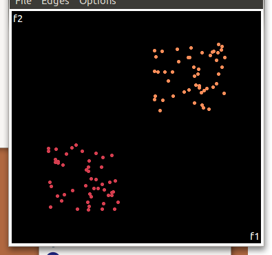

dimensionality reduction using random projections.
previously i've discussed dimensionality reduction using SVD and PCA but another interesting technique
is using a random projection
in a random projection we project A (a NxM matrix) to A' (a NxO, O < M) by the transform AP=A' where P is a _random_ MxO matrix
( well not totally random, each column must have unit length (ie entries in each column must add to 1) )
though the results of this reduction are not always as optimial as the results from SVD or PCA it has two huge benefits
- it's_really_ fast
- can be done _without_ needing to hold P in memory (since it's entries can be generated multiple times using a seeded RNG)
how much less accurate is it then? let's have a play around...
consider the 2d dataset of two clear cluster of points around (2,2) and (8,8)

comparing the five random projections to PCA we get the following
(all have been normalised and the bottom one is PCA)
there was a clear seperation between the 2 classes in 2d and it's retained in 3 out of the 5 projections even
though we're using _half_ the space going from 2d to 1d. the 2nd random projection actually looks very similiar to PCA
what about some higher dimensions?
let's generate the same two clusters but in 10d; ie around the points (2,2,2,2,2,2,2,2,2,2) and (8,8,8,8,8,8,8,8,8,8)
though we can't plot this easily there are 2 useful visualisations of the data
a scatterplot, which is pretty uninteresting...
or a 2d tour through the 10d space
(check out my screencast on ggobi if want a better idea of what this tour represents)
again lets compare 5 random projections to PCA when projecting from 10d to 1d
this time not so good.. we're trying for 1/10 of the space.
what about projecting to 2d? (ie 1/5 of the space)
PCA
run1
run2
run3
run4
run5
PCA is by the cleanest with the x-axis representing the clusters and the y-axis representing the in cluster variance
but they're not too bad, all but 1 of the random projections has the 2 clusters linearly seperable
this data has been quite dense? what about some sparse data instead?
let's keep with the 10d data and again generate clusters around (2,2,2,...) and (8,8,8,...) again but only
make 3 of the 10 non zero
eg (0,2,0,2,0,0,0,2,0,0) or (2,0,0,0,2,0,0,2,0,0) might be points in the first cluster....
 there was a clear seperation between the 2 classes in 2d and it's retained in 3 out of the 5 projections even
though we're using _half_ the space going from 2d to 1d. the 2nd random projection actually looks very similiar to PCA
what about some higher dimensions?
let's generate the same two clusters but in 10d; ie around the points (2,2,2,2,2,2,2,2,2,2) and (8,8,8,8,8,8,8,8,8,8)
though we can't plot this easily there are 2 useful visualisations of the data
a scatterplot, which is pretty uninteresting...
there was a clear seperation between the 2 classes in 2d and it's retained in 3 out of the 5 projections even
though we're using _half_ the space going from 2d to 1d. the 2nd random projection actually looks very similiar to PCA
what about some higher dimensions?
let's generate the same two clusters but in 10d; ie around the points (2,2,2,2,2,2,2,2,2,2) and (8,8,8,8,8,8,8,8,8,8)
though we can't plot this easily there are 2 useful visualisations of the data
a scatterplot, which is pretty uninteresting...
 or a 2d tour through the 10d space
(check out my screencast on ggobi if want a better idea of what this tour represents)
again lets compare 5 random projections to PCA when projecting from 10d to 1d
this time not so good.. we're trying for 1/10 of the space.
or a 2d tour through the 10d space
(check out my screencast on ggobi if want a better idea of what this tour represents)
again lets compare 5 random projections to PCA when projecting from 10d to 1d
this time not so good.. we're trying for 1/10 of the space.
 what about projecting to 2d? (ie 1/5 of the space)
what about projecting to 2d? (ie 1/5 of the space)